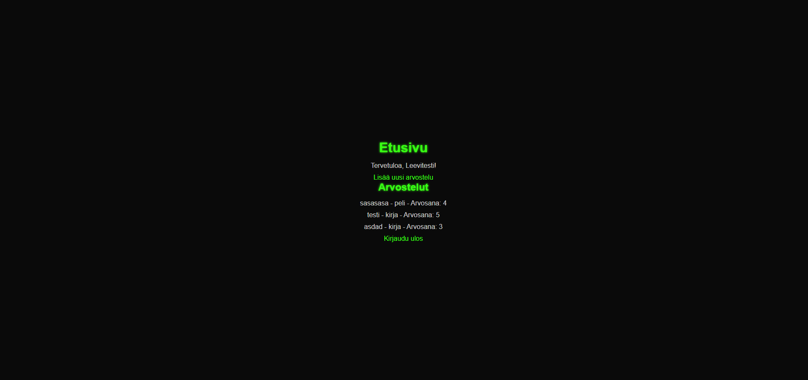
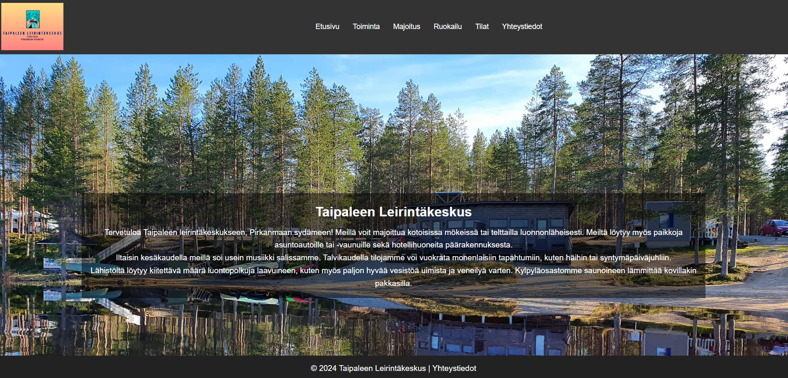
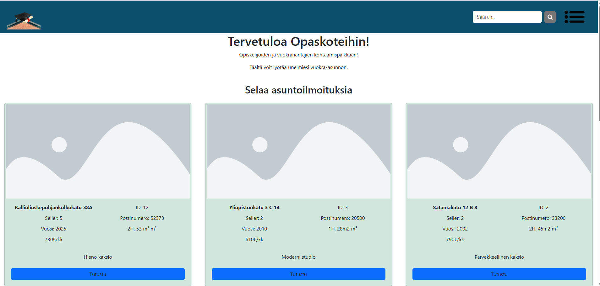

Ohjelmistokehittäjä
Olen IT alalla opiskelemassa ohjelmistokehitystä. Opiskelen 3 vuotta ja valmistun 2027.
Tein kirja-arvostelusivun, jossa on toimiva rekistöröityminen sekä kirjautuminen ja jossa pääset lisäämään arvosteluita kirjoista/sarjoista/elokuvista/peleistä . Roolini projektissa oli ohjelmoija. Projektissa käytettiin GitHub, Visual Studio, cPanel.
Linkki sivustolle: https://arvostelut.leepoi24.treok.io/
Projektissa oli tarkoitus luoda nettisivut Taipaleen leirintäkeskukselle. Toimin projektissa ohjelmoijana. Projektissa käytetyt teknologiat: Excel, Powerpoint, Visual Studio, Google, Adobe Xd, Adobe Photoshop
Tehtiin demoprojekti jossa suunniteltiin opiskelijatalojen vuokraussivusto. Roolini projektissa oli pääasiassa ohjelmoija. Projektissa käytettiin GitHub, Visual Studio, Visio.
Sähköposti: Leevipoikolainen@gmail.com
LinkedIn: linkedin.com/in/LeeviPoikolainen
GitHub: github.com/LeeviPoikolainen